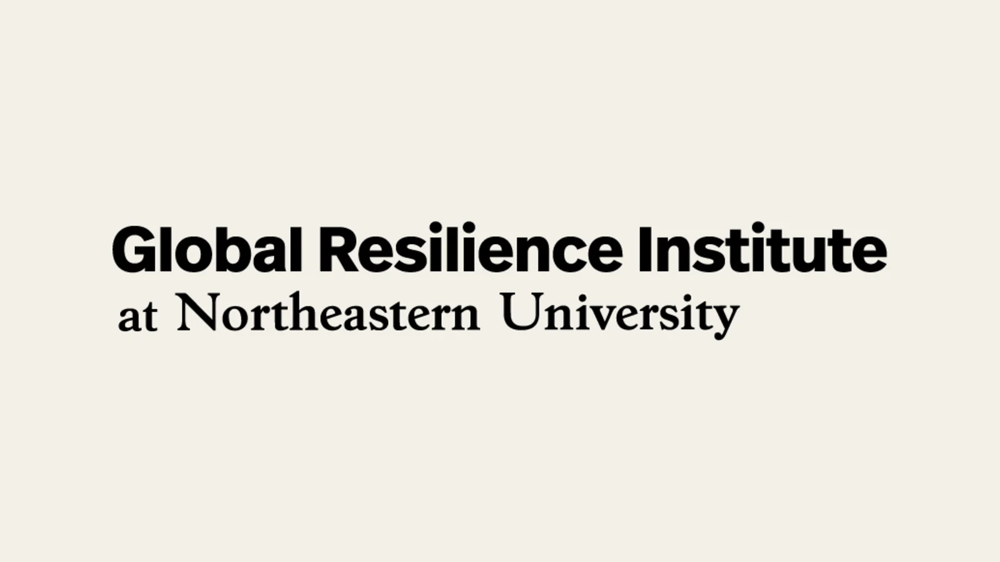

Bringing Disaster Resilience Research Into the Classroom
IRISTEM partnered with Northeastern’s Global Resilience Institute to translate disaster-resilience research for younger learners.

From student questions to a direct connection
The relationship began in December 2025, when IRISTEM contacted Professor Daniel Aldrich while researching social capital, community resilience, and hazard assessment. Those questions focused on how community relationships affect the way people prepare for and recover from hazards. Professor Aldrich later connected the students with colleagues at Northeastern University’s Global Resilience Institute.
On February 26, 2026, Emma Hibbert from GRI contacted IRISTEM directly and invited the team to meet. IRISTEM met with Emma Hibbert and Shemilore Daniels on March 17 to discuss the institute’s work and the student-led process for making research more accessible.
Beginning structured research translation
On March 25, GRI confirmed that it wanted to begin sharing published disaster-resilience research with IRISTEM. That first clear agreement to begin the translation work is why March 25 is the partnership date for this update. GRI shared information about its research projects and invited other members of its team to contribute work that could be relevant for younger learners.
IRISTEM’s role was to examine the source research, identify central concepts and questions, and develop student-friendly ways to explore them. That contribution goes beyond shortening a paper. It requires planning background explanations, choosing an age-appropriate activity or format, and keeping the connection to the researchers’ work clear.
Expanding into coastal outreach
The collaboration later expanded into student-friendly materials and outreach connected to coastal resilience and communities in southern Alabama. IRISTEM also contacted local educators, including Orange Beach City Schools, about reviewing or using the resources. That outreach was an invitation to consider the materials, not a claim that a school system adopted or endorsed them.
This partnership grew step by step: student research questions led to a faculty connection, GRI staff opened a direct conversation, and a defined research-sharing process created the foundation for educational work. The history matters because it shows what IRISTEM contributes at each stage. Students begin with serious questions, work from published resilience research, translate it into learning materials, and then seek educator feedback in communities connected to the subject.